Prior Cognitive Art
Tinbergen Axes, Hyperprior Regress, and Fixed-Point Explanation
1 Abstract: A Conceptual Map of Prior Origins, Art, and Fixed-Point Explanation
A prior is not explained by stacking more priors; it is located by mechanism, function, history, and fixed-point organization. The paper’s precise thesis is procedural: before asking why a prior exists, identify which explanatory kind is being requested and name the rule that will terminate the explanation. This working paper argues that Tinbergen’s four questions are not stacked levels in one causal chain. They are crossed axes: proximate versus ultimate, and static versus developmental. Mechanism and function ask what a prior is doing now; ontogeny and phylogeny ask how such organization came to be across different timescales.
The paper treats the familiar “prior on a prior” problem in hierarchical Bayes as structurally parallel to an ontogenetic account that says one prior selects another. Both postpone the question unless they terminate. Three termination families organize the paper: pragmatic closure, selection closure, and fixed-point termination. They are organizing families, not an exhaustive taxonomy of every possible explanation. A final upstream pass asks what comes before the first prior and answers with a constraint stack – viability, allostasis, co-homeostasis, development, and niche support – rather than with a hidden meta-prior. The project uses plain text, deterministic conceptual visualizations, and one deterministic illustrative simulation trace. Its supplement adds generated, auto-numbered formal claims and a closed symbol glossary as text-integrity artifacts rather than empirical machinery. The paper includes one deterministic illustrative simulation trace over authored formal states; it does not run stochastic simulations, synthetic-data experiments, empirical estimates, or performance benchmarks.
The “art” in the title names the craft at stake: arranging explanatory kinds (proximate/ultimate, static/developmental, selection/fixed-point) so that no single kind is mistaken for the whole, and rendering that arrangement as deterministic figures and checkable formalism rather than as empirical simulation evidence. It also marks a bounded link to aesthetic practice: artworks can stage encounters with expectations, material affordances, ambiguity, and meaning, but this paper treats that link as a conceptual analogy, not as an empirical theory of art.
2 Introduction: Why the Question of a Prior’s Origin Needs More Than Ontogeny
The question “why is there a prior?” is ill-typed until the explanatory kind is identified. It becomes unstable when the answer is only “because an earlier process selected it.” That move is not wrong, but it is developmental, and developmental answers naturally invite another question about where the selecting process came from. This is the same shape as the hyperprior problem in hierarchical Bayes: a prior receives another prior above it, which receives another, until the account stops by convention or by a stronger explanatory rule. The paper therefore treats “why” as a typed request, not as a license to stack levels indefinitely (Jaynes 2003; Pearl 2009; Gelman and Shalizi 2013).
Tinbergen’s four questions help locate the issue (Tinbergen 1963; Mayr 1961; Bateson and Laland 2013; Bergman and Beehner 2022). The questions are often read as a ladder, but for this manuscript they are a grid. One axis asks whether the account is proximate or ultimate. The other asks whether the account is static or developmental. Mechanism is proximate-static; function is ultimate-static; ontogeny is proximate-developmental; phylogeny is ultimate-developmental. The four questions are not four rungs of a single explanatory climb; they are four cells of a two-by-two map, and the regress pressure arises when one cell is asked to carry the load of all four.
This grid is an explicit analytic re-description, not a claim that Tinbergen’s framework is uniquely or naturally a Cartesian product. Bergman and Beehner’s causes/consequences leveling is compatible as a reorganization, but it does not license treating the two-axis map as an empirical taxonomy (Bergman and Beehner 2022).
An ontogenetic answer keeps an important part of the story: it explains how a prior was acquired or tuned in an individual history. It cannot carry the entire explanatory load. By itself, it does not explain why that developmental channel was available, why that class of priors persisted, or why the system is organized so that “having a prior” is the right description (Friston, Rigoli, et al. 2015; Friston, Levin, et al. 2015). In Bayesian practice, the analogous problem appears when a prior is justified by a hyperprior, and the hyperprior by another hyperprior. The iteration is technically harmless — it just produces a deeper model — but it is explanatorily inert unless a termination condition is named that is not itself another prior (Gelman and Shalizi 2013; Bernardo 1979).
The free energy principle provides the most developed contemporary site for this problem. A system that minimizes variational free energy under a Markov blanket can be described as instantiating a generative model. Here, prior means a distribution or parameterization supplied before the current update; posterior means the distribution after conditioning; and prior-like means a broader organizational constraint that may support inference without being a Bayesian prior in that narrow sense. Sufficient statistics of a model are therefore not automatically priors: the manuscript uses them only when their role is explicitly identified as a prior or prior-like constraint (Friston 2010, 2013; Hohwy 2016b). But the Markov blanket must be used with care. In active-inference work it is a statistical boundary within a model of the system; in stronger biological readings it is connected to autonomy and self-individuation (Kirchhoff et al. 2018). Recent critiques warn that those two registers should not be conflated: a Markov blanket can organize an explanatory model without automatically demarcating the literal physical or cognitive boundary of an organism (Bruineberg et al. 2022; Raja et al. 2021). The more recent mathematical expositions of active inference and the free energy principle reinforce the same discipline: action, perception, and model evidence belong to a formal description whose scope has to be stated (Friston et al. 2012, 2023). This creates the same question at a deeper level: if the prior-like structure is a bounded model of what the system maintains, then “where did the prior come from?” is not answered by naming another prior above it. The answer must either be pragmatic (stop here for calculation), selective (filter by viability), or fixed-point (the system is the prior-like settlement, not a bearer of one more hidden prior). These are the paper’s three organizing families, not a claim that the space of explanatory stops is exhausted by them.
The harder upstream version asks what comes before the first prior, or what could count as a bias before explicit bias. The manuscript treats that question as a first-principles pressure test. If “prior” means an inferential parameter, then putting another prior before it merely restarts the regress. The better answer is pre-inferential constraint: viability asymmetries, predictive bodily regulation, shared early-life regulation, and developmental niche structure make some expectation-forming paths available before they become belief-like priors. Work on the body as first prior, co-embodiment and co-homeostasis, allostatic regulation, visceral rhythmicity in development, morphogenesis, and evolved active-inference architectures supports this upstream frame (Allen and Tsakiris 2018; Ciaunica et al. 2021; Sterling 2012; Corcoran et al. 2025; Kuchling et al. 2020; Pezzulo et al. 2022). This is not a discovery of a literal hidden meta-prior. It is a category correction: before learned priors come histories of regulation, support, embodiment, and viable form.
The working hypothesis is therefore modular: the regress is not a property of Tinbergen’s framework; it is a property of choosing the ontogenetic quadrant as the whole answer. Once the quadrants are kept distinct, the regress can be located in a specific move — treating a developmental answer as a complete one — rather than in the explanatory apparatus itself. The methodological consequences are developed in sec. 3, the visual atlas in sec. 4, and the formal claims in sec. 9. The conclusion synthesizes these threads in sec. 5.
- Tinbergen is crossed, not stacked: Mechanism, function, ontogeny, and phylogeny form two axes: proximate versus ultimate and static versus developmental.
- Ontogeny alone keeps deferring: Treating development as the whole answer to why a prior exists moves the question to the developmental source of that prior.
- Biological inheritance mirrors hyperprior inheritance: Prior-selects-prior in developmental language has the same shape as prior-on-prior in hierarchical Bayes.
- Three termination families organize the paper: The paper organizes the regress around pragmatic, selection, and fixed-point termination families without claiming that these exhaust every possible explanatory stop.
- Before the first prior is constraint history: Going upstream does not reveal a hidden prior before all priors; it reveals viability, regulation, shared embodiment, developmental tuning, and niche structure that make learned priors possible.
- Joint structure precedes factor cleanup: The argument is adjacent to lambda-decomposition work because joint organization can be prior to the factors later extracted from it.
- Priors are co-shaped by system and niche: The prior-like structure is not fully given by the environment nor fully endogenous; it is co-shaped by the organism and its niche.
- Markov blankets are achieved, not given: The statistical boundary separating internal from external states is part of what the persisting system achieves, not a boundary imposed from outside.
- Tinbergen questions are complementary, not rival: The four questions are complementary perspectives on the same phenomenon; conflating them is the source of the regress, not the framework itself.
- Active inference closes the action-perception loop: Active inference couples perception and action while distinguishing variational free energy for inference from expected free energy for policy selection, closing the explanatory loop the prior was meant to serve.
- Prior-like structure recurs across scales: The regress-termination problem recurs at the cellular, organismic, and social scales; the fixed-point move applies at each level without requiring a new hidden prior.
- Art arranges encounters with priors: The paper’s art claim is bounded: aesthetic practices arrange cues, contexts, and meanings that interact with predictive priors; they do not prove that art directly rewires priors as an empirical mechanism.
The supplement formalizes this hypothesis only where the notation improves accountability. Its claims are auto-numbered from source records, its symbol glossary is generated, and its integrity token is injected into the rendered text. The formalism is a validation aid, not a simulation model. The paper sits alongside policy-entanglement and lambda-decomposition work in which joint organization may be prior to the factors later extracted from it (Costa et al. 2020; Parr et al. 2022). The “art” in the title is meant in this sense: the craft of keeping explanatory kinds distinct and rendering that distinction as deterministic figures and checkable claims, rather than as a metaphysical theory of priors.
This use of “art” is also disciplined by recent predictive-processing aesthetics. Work on visual art, music, and neuroaesthetics shows that aesthetic experience often turns on learned expectations, uncertainty, affect, and meaning-making (Van de Cruys and Wagemans 2011; Pearce 2018; Frascaroli et al. 2024; Pearce et al. 2016). That literature supports the paper’s modest analogy: aesthetic practices arrange encounters with priors and prediction errors. Material-engagement and extended-mind work make the analogy more public and embodied: art-making uses artifacts, media, and situated practice to make expectations available for inspection rather than keeping them inside the head (Dewey 1934; Clark and Chalmers 1998; Varela et al. 1991; Thompson 2007; Malafouris 2013; Noë 2015; Wynn et al. 2021). None of this supports a stronger conclusion that art is reducible to prediction-error optimization, that aesthetic value is the same as epistemic value, or that the free energy principle is a complete theory of art (Kesner 2014; Burnett and Gallagher 2020; Brown and Dissanayake 2009; Bowers and Davis 2012).
3 Conceptual Method: Typed Explanations and Source-Owned Artifacts
This is a conceptual paper. It includes one deterministic illustrative simulation trace over authored formal states, but it uses no stochastic simulation, no synthetic data, no empirical-effect estimate, and no numerical performance claim. Its method is diagrammatic clarification: keep the quadrants, regress types, trace states, and termination moves explicit enough that the prose cannot silently trade one explanatory kind for another. The methodological commitment is that the distinction between explanatory kinds — proximate versus ultimate, static versus developmental — must be preserved through every stage of the argument. When the distinction is lost, the regress reappears as if it were forced by the framework, when in fact it is forced by a category error: asking a developmental question to answer a static one.
The source layer records 4 Tinbergen quadrants, 3 termination modes, 12 argument modules, 21 figure specifications, 12 formal claims, and 35 glossary rows. Those records are rendered into visual artifacts, supplement formalisms, and manuscript variables during the analysis stage. The visual inventory is deliberately partitioned: the atlas contains 18 argument diagrams, while the formal supplement contains 3 contract diagrams.
3.1 Operational Protocol
The manuscript applies a compact five-step protocol to each “why” question:
- Type the request. State whether the question concerns mechanism, function, ontogeny, phylogeny, or another explicitly named explanatory kind.
- Expose deferral. Show whether the proposed answer merely moves the prior to a hyperprior, selector, or earlier developmental condition.
- Name the stop. Identify pragmatic, selection, or fixed-point closure when one of those families does the relevant explanatory work; do not imply the list is exhaustive.
- State the ceiling. Mark what the stop explains and what it leaves open, especially for Markov blankets, niche construction, and aesthetic analogy.
- Render and validate. Generate the diagram and formal record from the source inventory, hydrate the prose, and reject stale or mismatched outputs.
This protocol is an accountability device, not a causal model or an empirical estimator. It makes category changes visible before they become prose claims.
3.2 Tinbergen Crossed With Prior Explanation
tbl. 1 lays out the crossed structure. Mechanism and function are static: they can close locally by saying what a prior is doing now. Ontogeny and phylogeny are developmental: they explain how a structure came to be over time. The regress appears when a developmental answer is asked to serve as the whole explanation.
| Question | Scale | Time-form | Prior question answered | Regress status |
|---|---|---|---|---|
| Mechanism | proximate | static | What the prior is doing now inside the system. | closes locally by naming present causal organization |
| Function | ultimate | static | What the prior is for now in selection-structured terms. | closes locally by naming viability and use |
| Ontogeny | proximate | developmental | How the prior became shaped across an individual history. | defers the question to the source of that history |
| Phylogeny | ultimate | developmental | How the prior persisted across population histories. | blocks regress through selection-filtered survival |
The table makes the main constraint visible. Mechanism and function are static in the relevant sense: they can close locally by saying what a prior is doing now. Ontogeny and phylogeny are developmental: they explain how a structure came to be over time. The regress appears when a developmental answer is asked to serve as the whole explanation. This is why Bateson and Laland’s update of Tinbergen’s framework matters: they show that the four questions are complementary, not competing, and that conflation among them is the source of persistent confusion in ethology and beyond (Bateson and Laland 2013). Bergman and Beehner’s cause/consequence leveling is useful because it shows the framework can be reorganized without losing the need for explanatory distinctions (Bergman and Beehner 2022). The same conflation arises when “why is there a prior?” is answered by only naming a developmental channel. Konner’s nine-level proposal is useful here as a cautionary extension rather than as a replacement: one can split Tinbergen’s questions into finer levels, but this paper depends only on preserving the kinds of explanation they name (Konner 2021). The category-theoretic distinction between explanatory kinds is not merely terminological: it tracks a real difference in what an explanation is being asked to do (Smith 2000; Godfrey-Smith 2014).
3.3 Regress-Closure Strategies
- Pragmatic termination (formal sufficiency): Install a flat or weak hyperprior and stop asking. Limitation: It is useful for calculation but thin as an explanation.
- Selection termination (viability filtering): Function and phylogeny answer why this prior persists. Limitation: It explains persistence, not the fine structure of a single organism.
- Self-referential termination (fixed-point individuation): The prior is the settled organization of the process it constrains. Limitation: It must be stated as a category shift, not another hidden prior.
These are closure strategies rather than three proofs that one metaphysical question has been answered. The first move, pragmatic termination, is the standard move in applied Bayesian statistics: install a weakly informative, reference, or penalized complexity prior and then test whether the model is adequate for the task (Gelman and Shalizi 2013; Simpson et al. 2017). It is epistemically honest about its own limitation: prior predictive checks, posterior predictive checks, and sensitivity analysis regularize inference without claiming to discover the origin of the prior. The second move, selection termination, treats the prior as the surviving form after viability filtering by function and phylogeny (Friston, Levin, et al. 2015; Constant et al. 2018). It explains persistence without explaining fine structure. The third move, fixed-point termination, is the most interesting for cognitive science because it changes the grammar of the question. Instead of asking for a prior behind the prior, it asks whether the persisting organization of the system is what the term “prior” was naming.
That is why the free energy principle and Markov blanket self-individuation matter here (Friston 2010; Ramstead et al. 2018; Kirchhoff et al. 2018). When the Markov blanket is treated as a model-level boundary tied to the system’s self-maintaining dynamics, the prior-like structure becomes a bounded description of organization rather than a parameter received from a higher level (Constant et al. 2018; Hohwy 2016b). The critique literature matters because it blocks an overclaim: the notation does not by itself identify a literal organism boundary, so the fixed-point move must be stated as a bounded modeling claim, not a metaphysical shortcut (Bruineberg et al. 2022; Raja et al. 2021). The system does not have a prior in the way it has a property; it persists as the organization that makes prior-like constraint legible.
3.4 Before The First Prior
The first-principles version of the problem asks what is upstream of the first inferential prior. This paper answers by refusing to treat “before” as another level in a Bayesian hierarchy. A prior-before-priors would only duplicate the hyperprior regress. The upstream layer has to be a different explanatory kind: viability constraints, regulatory asymmetries, embodied support, and developmental scaffolding that make expectation-forming possible before the organism can own an explicit prior.
This move draws on four adjacent literatures. Interoceptive predictive processing treats the body as a first prior for self-modeling, which shifts the origin question from detached belief to regulatory bodily organization (Allen and Tsakiris 2018). Early-life co-embodiment and co-homeostasis work pushes farther upstream: bodily regulation is initially shared with caregivers and environments rather than privately possessed (Ciaunica et al. 2021). Allostasis names predictive regulation as a core physiological pattern, while recent developmental work on rhythmic visceral dynamics describes how bodily regularities can teach early cognition before explicit conceptual learning (Sterling 2012; Corcoran et al. 2025). Finally, morphogenesis and evolutionary active-inference accounts suggest that constraint histories can be biological and architectural before they are cognitive in the narrow sense (Kuchling et al. 2020; Pezzulo et al. 2022; Linson et al. 2018).
The RedTeam boundary is therefore strict. These sources license an upstream constraint stack, not a literal first-prior discovery. “Bias before bias” means asymmetry before inference: some forms are viable, regulatable, shareable, and developmentally reachable before they are available as priors in a model. fig. 18 renders that distinction as a visual constraint stack.
3.5 The Role of Niche Construction
The niche-construction reading of the free energy principle deepens the selection-termination move. Foundational niche-construction theory argues that organisms modify the selection pressures they and their descendants face, and that cultural practices can participate in that feedback (Laland et al. 2000; Odling-Smee et al. 2003). Constant and colleagues add the variational version: organisms actively structure their niche, and the niche structures them back, so that the statistical regularities exploited by the organism are partly of its own making (Constant et al. 2018; Baltieri et al. 2022). Developmental niche construction adds an important boundary: the constructed environment does not only select among ready-made forms; it also helps produce developmental variation and transmit resources across generations (Stotz 2017). This does not eliminate selection — viability still filters what can persist — but it shows that the filter is not purely external. The prior-like structure is co-shaped by the system and its environment. This complicates the selection-termination move without changing its logical role: it still blocks regress by naming what persists rather than by adding another hidden level. The visual atlas in sec. 4 renders this co-shaping diagrammatically.
3.6 Active Inference and Variational Closure
Active inference extends the free energy principle to action and policy selection (Friston et al. 2012; Friston, Rigoli, et al. 2015; Costa et al. 2020; Friston et al. 2017). Extended active-inference work makes the same point at the organism-niche surface: action changes the sensory and material field in which future inference occurs (Baltieri et al. 2022). The prior serves a coupled perception-action process, but the objectives must not be collapsed: variational free energy evaluates an approximate posterior, whereas expected free energy evaluates policies. This closes the explanatory loop without claiming that inference and policy selection are the same optimization problem. The variational free energy bounds negative log evidence from above, or equivalently tightens the evidence lower bound as the approximate posterior approaches the target posterior within its variational family (Blei et al. 2017). In this paper that formal fact is used narrowly: it supports a model-internal settling interpretation of prior-like constraint, not a claim that free energy literally vanishes or that variational inference has derived the historical origin of the prior (Friston 2019; Friston et al. 2023; Costa et al. 2023; Bowers and Davis 2012).
The same boundary applies to epistemic value. Active inference can model information-seeking policies and uncertainty reduction (Friston, Rigoli, et al. 2015; Parr et al. 2022), but epistemic value is not aesthetic value. When the paper uses aesthetic scholarship, it treats art as a field of staged expectation, ambiguity, affect, and meaning, not as a proof that aesthetic worth is just expected free-energy minimization (Van de Cruys et al. 2024; Frascaroli et al. 2024; Burnett and Gallagher 2020).
3.7 Aesthetic Prior-Craft As A Bounded Analogy
Predictive-processing aesthetics offers the paper its title discipline. Visual art, music, and aesthetic experience often involve learned regularities, expectation, prediction error, affect, and meaning-making (Van de Cruys and Wagemans 2011; Kesner 2014; Pearce 2018; Starr 2023). Those sources make it legitimate to say that artworks can arrange encounters with priors: a painting, musical style, performance, or conceptual work can build expectations, violate or loosen them, and invite a viewer or listener to recover structure at another level. Neuroaesthetics adds a useful triad of sensory-motor, emotion-valuation, and meaning-knowledge systems, which keeps the account from reducing art to low-level perceptual surprise (Chatterjee and Vartanian 2014; Pearce et al. 2016).
The analogy becomes stronger, and safer, when art is treated as material practice rather than as perception alone. Dewey’s art-as-experience frame, Noe’s “strange tools” account, extended-mind theory, and material-engagement archaeology all support a view in which artworks and art-making are public, embodied, and artifact-mediated ways of reorganizing attention and action (Dewey 1934; Noë 2015; Clark and Chalmers 1998; Malafouris 2013, 2019; Wynn et al. 2021). Recent material-engagement work on art and chance sharpens this point: making is not merely the execution of an inner plan but an encounter with affordances, accidents, and media that can change what counts as the next relevant move (March and Malafouris 2023; Malafouris 2023). In the paper’s terms, the artwork is not a hidden predictive model; it is a crafted environment in which prior-like expectations are exposed, perturbed, and made legible. fig. 15 summarizes this source-to-claim boundary.
That analogy is deliberately bounded. Predictive processing is a fruitful lens for expectation and ambiguity in aesthetic experience, not a master theory of art. Enactive and 4E accounts emphasize that artworks are embodied, sociomaterial practices and affordance fields, while neuroaesthetic critics warn that the arts exceed narrow aesthetic preference or neural reward (Rietveld and Kiverstein 2014; Burnett and Gallagher 2020; Brown and Dissanayake 2009). Predictive accounts of imagination and enactive accounts of surprise add the same caution from another angle: prediction can illuminate imaginative perception and improvisation, but it should not erase the difference between controlled imagining, embodied discovery, and aesthetic practice (Jones and Wilkinson 2020; Cavedon-Taylor 2022; Gallagher 2022). The manuscript therefore treats “prior cognitive art” as the craft of arranging explanatory encounters with priors, not as a mechanism claim about artists’ intentions, viewers’ neural updating, or imagination as prediction alone.
3.8 Scale Recurrence
The regress-termination problem recurs at multiple scales. The fixed-point move applies at each scale without requiring a new hidden prior: the prior-like settlement at one scale becomes the substrate for the next. This recurrence is a structural analogy, not a claim of scale invariance or empirical self-similarity. Three concrete instances make the recurrence precise.
At the cellular level, the Markov blanket of a single cell is a prior-like model of molecular organization: the cell maintains exchange statistics that can be represented as a boundary process rather than received from a higher level (Friston 2013; Kirchhoff et al. 2018; Bruineberg et al. 2022). At the organismic level, the nervous system maintains prior-like constraints that guide perception and action; the brain-body system is modeled as maintaining its own action-perception boundary rather than being handed one from outside (Friston 2010; Hohwy 2016b; Maturana and Varela 1980). At the social level, cultural practices and shared models function as prior-like structures that organize collective behavior, and those practices are themselves steady states of a population rather than externally supplied rules (Constant et al. 2018; Ramstead et al. 2023). In each case the same move terminates the regress: identify the persisting organization rather than posit a selector behind it. The fixed-point structure \(X^*_k = \Phi(X^*_k)\) recurs, and the scale recursion operator \(R\) carries the settlement from one level to the substrate of the next without introducing a new explanatory kind.
3.9 Formal Supplement Protocol
The supplement uses generated numbering rather than hand-maintained labels. Each formal claim is derived from source records, and every project-specific symbol in those claims must appear in the generated glossary table. This gives the text a lightweight integrity surface: if the formal notation and glossary drift apart, the source contract fails before render. The contract is deliberately small — 12 claims, one glossary of 35 rows, 11 validation checks — because the point is not to build a formal model but to make drift detectable.
4 Visual Atlas: Eighteen Deterministic Argument Diagrams
This section is called a visual atlas rather than results because the paper does not run experiments. It contains 18 conceptual argument diagrams generated from the static source inventory. The complete 21-figure set also includes 3 contract diagrams in sec. 9; those supplement figures validate claims, symbols, and text rather than add new substantive arguments. The one deterministic simulation trace is an authored formal-state sequence, not stochastic sampling or empirical evidence. Every figure is source-owned, captioned, and given generated accessibility text.
4.1 Tinbergen Axes
fig. 1 shows the central correction. Tinbergen’s four questions form two axes, not a stacked series of causes. The quadrant that creates regress pressure is ontogeny when it is made to answer more than it can answer. Recent work that re-levels Tinbergen into causes and consequences sharpens the same point: the questions can be reorganized, but they cannot be collapsed into one explanatory kind (Bergman and Beehner 2022).
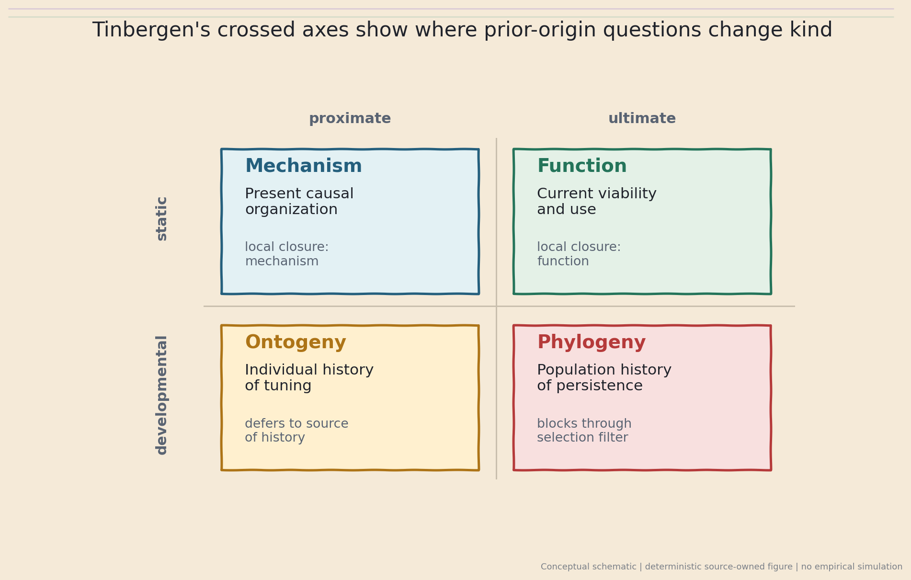
4.2 Hyperprior Regress And Termination
fig. 2 maps the formal parallel between hierarchical Bayes and developmental inheritance. A prior on a prior can always be extended upward. A developmental prior that selects another developmental prior can always be extended backward. The explanatory task is not to add another level; it is to name the stopping condition. The pragmatic branch is continuous with Bayesian workflow discipline: a prior is justified by model adequacy and regularization, not by discovering an ultimate meta-prior (Gelman and Shalizi 2013; Simpson et al. 2017).
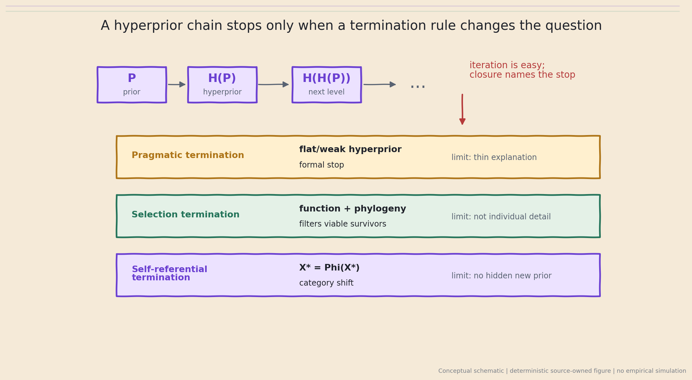
4.3 Prior As Settled Equilibrium
fig. 3 sketches the fixed-point move. In this framing, a prior is not an object inside the system that needs another prior above it. It is the settled organization of perception, action, and boundary maintenance that persists. This is where the argument sits closest to free-energy and autopoietic readings of cognition (Friston 2010; Maturana and Varela 1980).
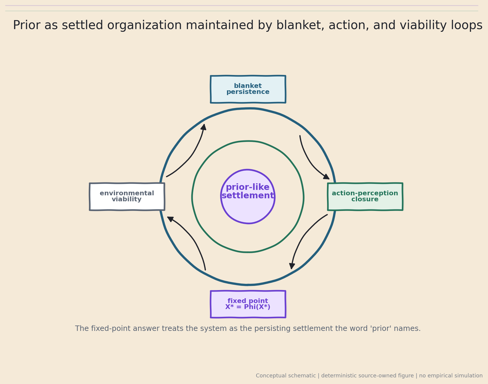
4.4 Ontogeny And Hyperprior Shape
fig. 4 makes the structural analogy explicit. In hierarchical Bayes, a prior can be justified by a hyperprior, which can be justified by another hyperprior. In an ontogenetic-only biological account, a current prior can be justified by a developmental selector, which can then be asked to justify its own source. The point is not that these are the same substantive theory. The point is that they share a regress shape.
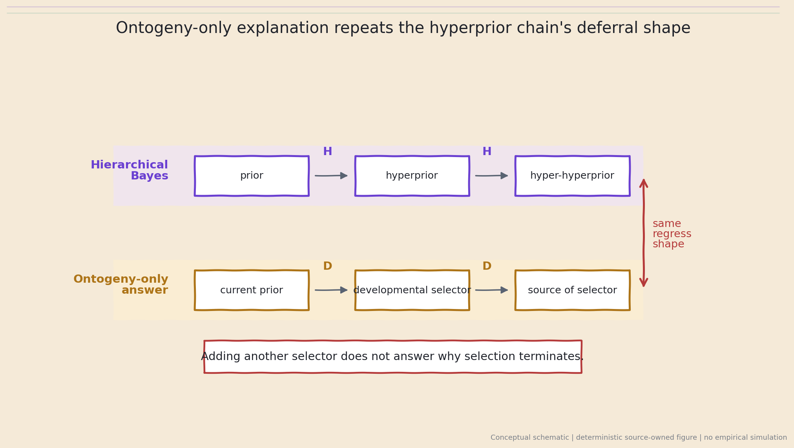
4.5 Selection Filter
fig. 5 distinguishes selection closure from merely adding another historical layer. Function and phylogeny do not answer every sense of “why” the prior exists; they explain persistence by filtering the space of candidate forms. Fragile, overfit, or miscalibrated priors do not remain available as the objects whose origin we ask about. The figure therefore represents a selection-based closure of the availability question, not a complete causal history of the individual prior.
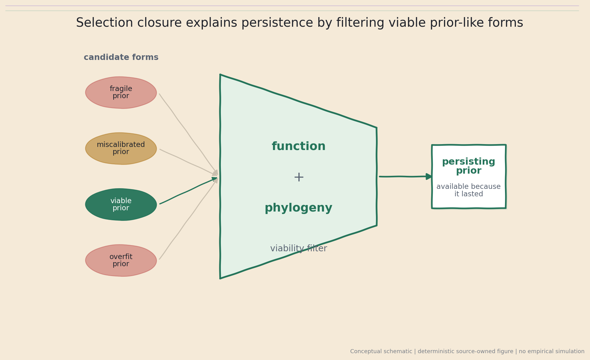
4.6 Policy Entanglement Bridge
fig. 6 sketches why the argument sits beside policy-entanglement work. If lambda-decomposition extracts policy, state, and prior-like factors from an already joint structure, then those factors are useful cuts rather than proof that the factors were ontologically first. This is the same explanatory posture as fixed-point termination: organization can precede the decomposition that later makes it legible.
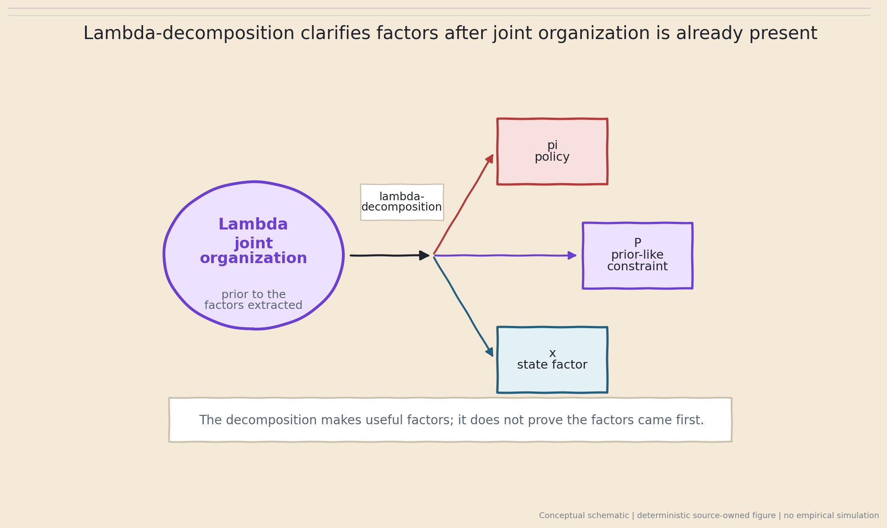
4.7 Niche Co-Construction
fig. 7 shows how the prior-like structure is co-shaped by organism and environment. The niche-construction reading does not eliminate selection — viability still filters what can persist — but it shows that the filter is not purely external. The prior is not fully given by the environment nor fully endogenous; it is co-shaped by the reciprocal interaction (Odling-Smee et al. 2003; Laland et al. 2000; Constant et al. 2018).
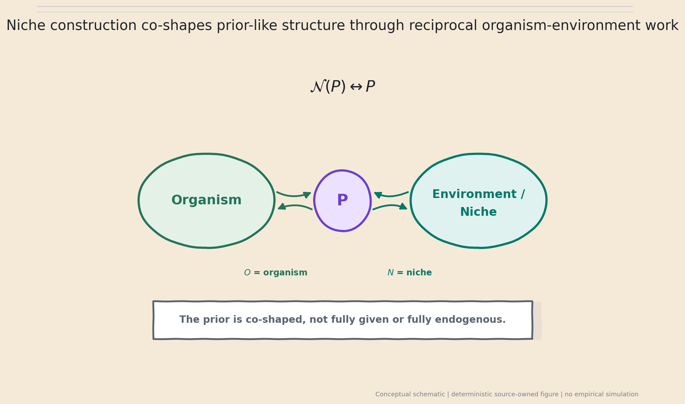
4.8 Markov Blanket As Achievement
fig. 8 shows the Markov blanket as a self-maintaining model boundary rather than an externally imposed partition. When the blanket is treated as an achievement of the system, the prior-like structure becomes part of what the model describes the system as maintaining, not a parameter received from a higher level (Kirchhoff et al. 2018; Friston 2013). The figure also marks the scope boundary introduced by recent critiques: the notation is not enough by itself to settle organismal or cognitive ontology (Bruineberg et al. 2022; Raja et al. 2021).
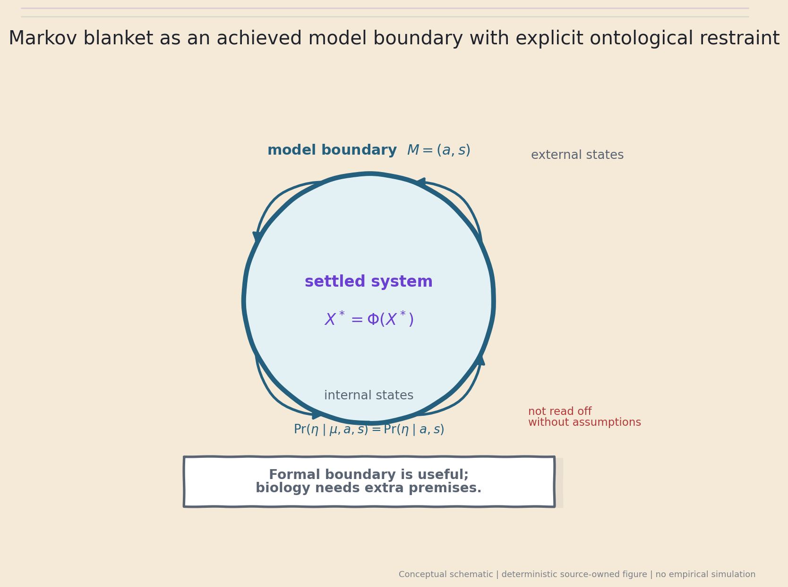
4.9 Explanatory Complementarity
fig. 9 shows the four Tinbergen questions as complementary perspectives rather than rival hypotheses. The regress appears when one question is asked to carry the load of all four; the framework itself does not force it (Bateson and Laland 2013; Bergman and Beehner 2022).
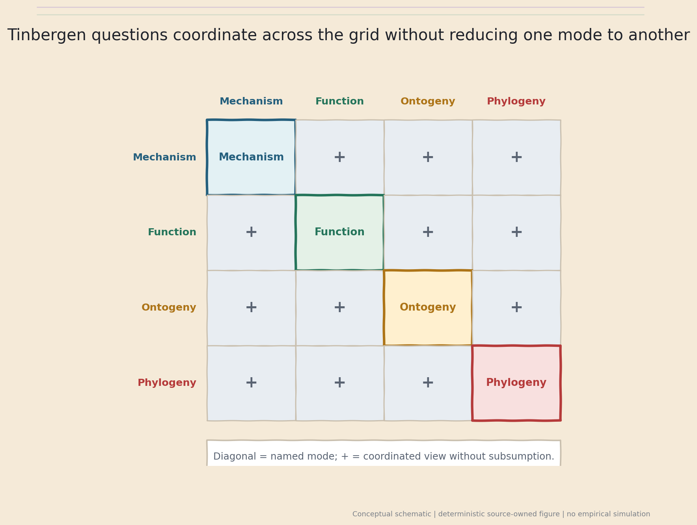
4.10 Active Inference Cycle
fig. 10 shows how active inference closes the action-perception loop. The prior serves a coupled process in which variational free energy evaluates approximate inference and expected free energy evaluates policy selection; the two objectives should not be conflated (Friston et al. 2012; Friston, Rigoli, et al. 2015; Costa et al. 2020). This closes the explanatory loop: the prior is not merely a parameter for belief updating but a constraint on the coupled perception-action system.
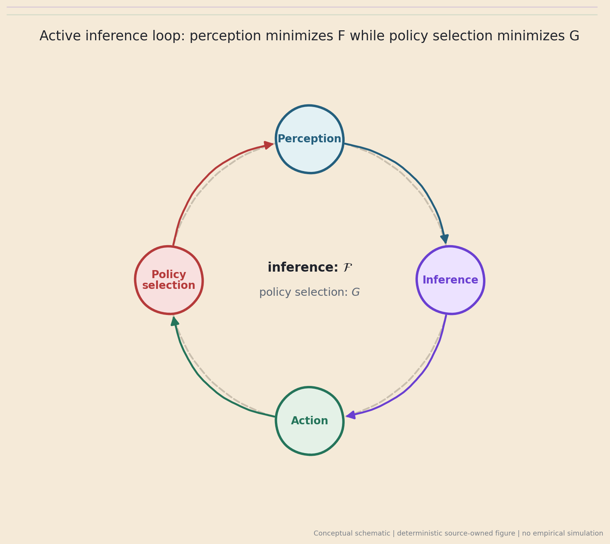
4.11 Variational Free Energy Landscape
fig. 11 shows the free-energy landscape as a relative variational-bound landscape. The prior-like structure is not presented as the literal floor of a vanishing free-energy surface. Instead, the figure marks a model-internal settling interpretation: under the bound, approximate posterior structure can approach a target posterior without turning the prior’s origin into an empirical result (Friston 2010, 2013; Blei et al. 2017; Friston et al. 2023).
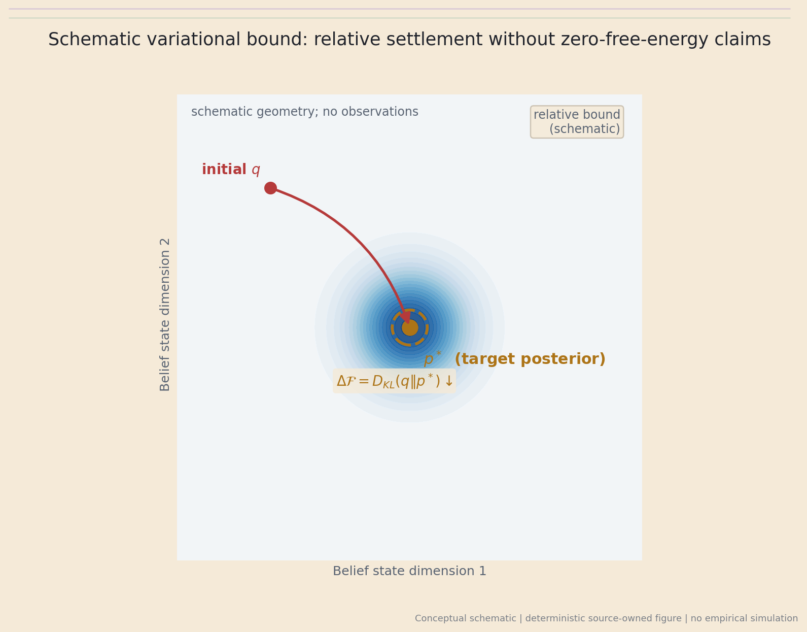
4.12 Deterministic Simulation Trace
fig. 12 is the manuscript’s only simulation-named artifact, and its scope is intentionally narrow. It shows deterministic simulation as an ordered trace over formal state labels: a question about the prior, exposure of regress, Tinbergen partition, termination choice, and fixed-point settlement. The figure does not model cognition, sample outcomes, estimate effects, or report performance; it makes the formal state transition surface inspectable.
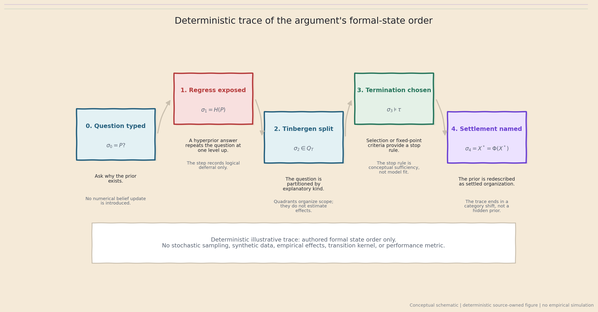
4.13 Scale Recurrence
fig. 13 shows that the regress-termination problem recurs at multiple scales. The fixed-point move applies at the cellular, organismic, and social levels without requiring a new hidden prior at each transition (Friston 2013; Kirchhoff et al. 2018). The same category shift applies recursively: the prior-like settlement at one scale becomes the substrate for the next.
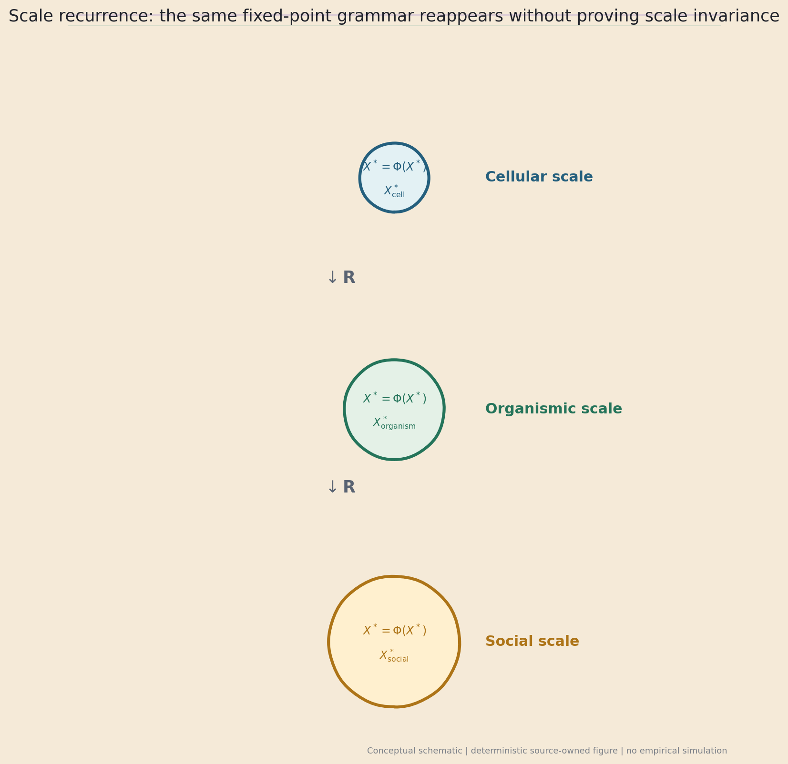
4.14 Source-Claim Boundary Map
fig. 14 makes the scholarship contract visible. The publication pass does not treat every discovered source as equal. Discovery scans surface candidates; primary or scholarly verification decides whether a source is accepted, rejected, or deferred; and only accepted sources attached to claim ledger entries reach the manuscript. This is the paper’s answer to citation inflation: sources enter only where they bound or strengthen a live claim.
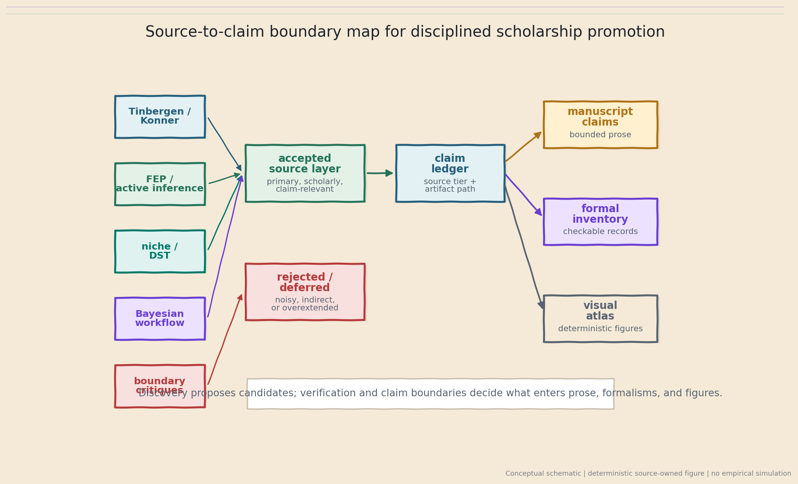
4.15 Aesthetic Prior-Craft Map
fig. 15 makes the title’s art claim inspectable. It does not route all aesthetic experience through prediction error. Instead, it shows three supporting lines feeding one bounded claim: predictive aesthetics for staged expectation, 4E and material-engagement scholarship for situated practice, and neuroaesthetic scope controls for sensory, valuation, and meaning systems (Frascaroli et al. 2024; Burnett and Gallagher 2020; Chatterjee and Vartanian 2014; Wynn et al. 2021). The figure also keeps the claim ceiling in view: prior-craft is not a theory of artist intention or neural updating. The point is narrower and stronger: artworks and art-making can arrange encounters with expectation, affordance, accident, affect, and meaning (Dewey 1934; Noë 2015; Malafouris 2013, 2023).
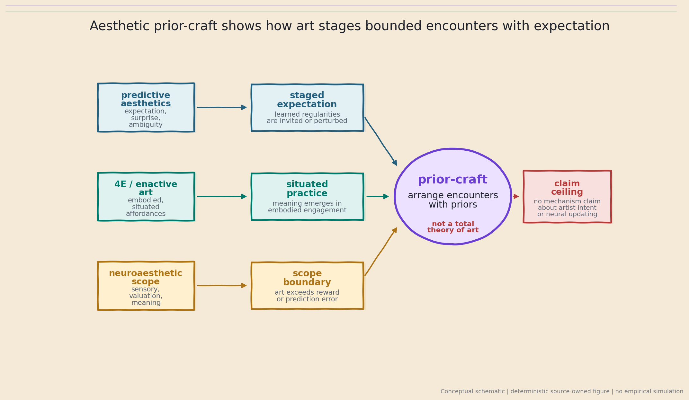
4.16 Markov Blanket Scope Split
fig. 16 separates three uses of Markov blankets: Pearl-style conditional-independence structure, Friston-style active-inference model boundary, and realized organismal or cognitive boundary. The split lets the argument use Markov blankets as part of fixed-point explanation while preserving the critical distinction emphasized by the recent debate (Bruineberg et al. 2022; Raja et al. 2021).
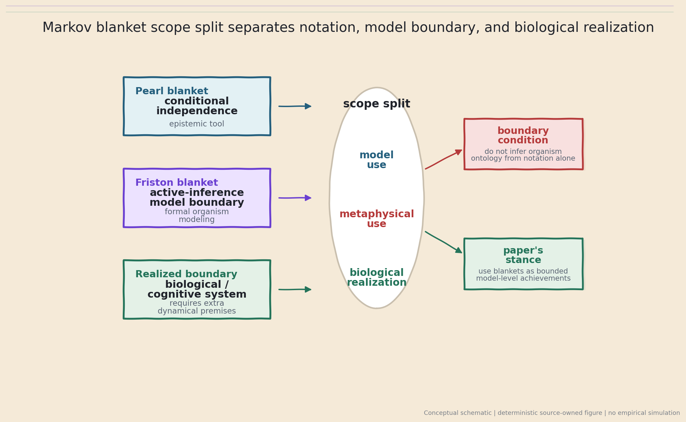
4.17 Niche-Prior Feedback Field
fig. 17 gives the niche-construction claim a richer shape. Organismic action, developmental resources, and cultural inheritance operate at different timescales but feed back into the same prior-like field. The point is not that niche construction is a fourth termination. It is a constraint on selection termination: what persists is partly produced by the system-niche loop that selection later filters (Constant et al. 2018; Stotz 2017; Baltieri et al. 2022; Laland et al. 2000).
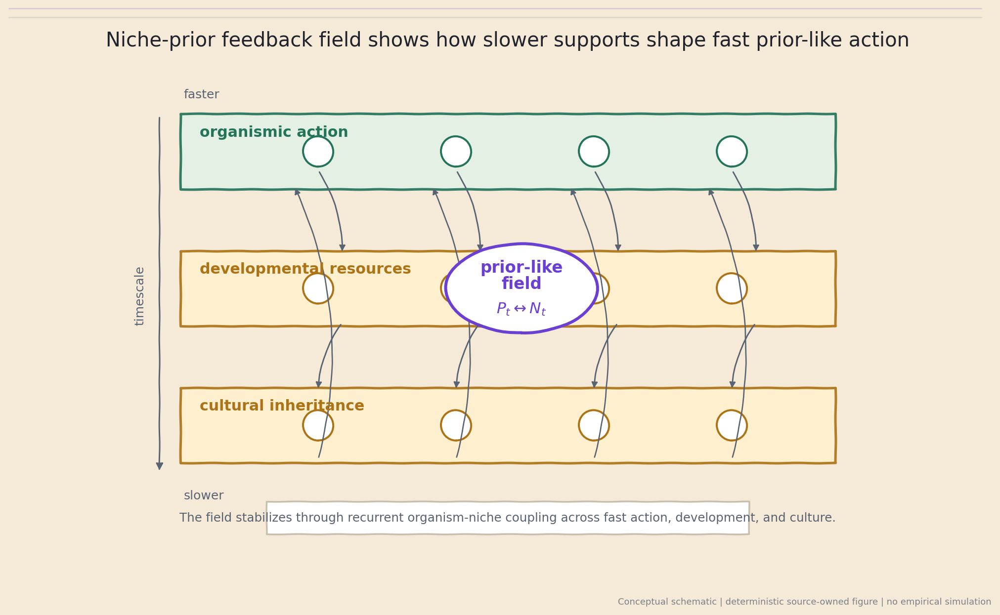
4.18 Before The First Prior
fig. 18 answers the upstream version of the regress question. It does not draw a prior behind the first prior. Instead, it places viability asymmetry, allostatic regulation, co-embodiment and co-homeostasis, developmental tuning, and cultural niche craft in a constraint stack. This lets the figure say what “bias before bias” can mean without violating the paper’s scope: some forms are regulatable and reachable before they are available as explicit priors (Ciaunica et al. 2021; Allen and Tsakiris 2018; Sterling 2012).
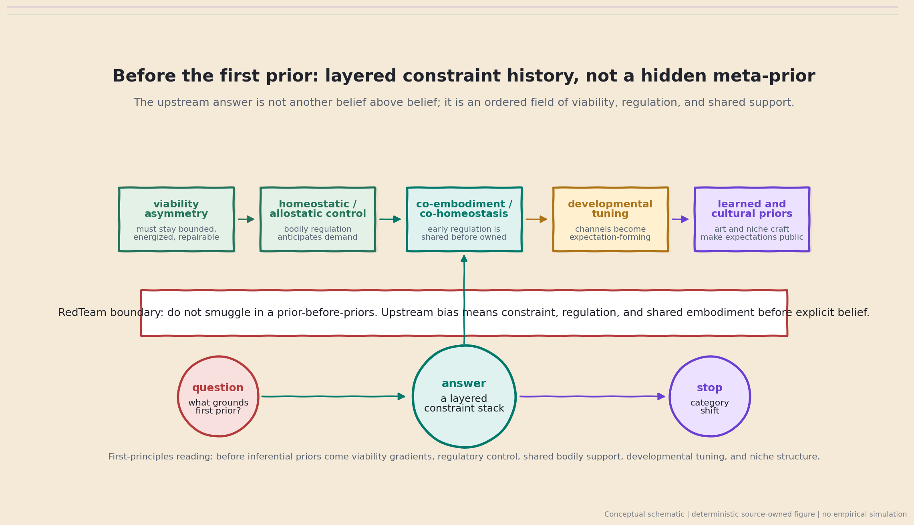
4.19 Figure Manifest
The visual atlas contains 18 argument diagrams. The formal supplement adds 3 contract diagrams, for 21 source-owned visualizations in total.
tinbergen_axes.png: Four colored panels hold Tinbergen’s questions in tension rather than stacking them into a causal ladder. Read across scale and then down temporality: mechanism and function can close local questions about present organization and current use, while ontogeny and phylogeny ask how that form was shaped and retained. The key visual warning is that the regress appears when one panel, usually ontogeny, is asked to speak for the whole grid. The figure therefore turns a familiar taxonomy into a guardrail against explaining a prior by merely naming its developmental source.regress_terminations.png: The upper chain is deliberately too easy to extend: a prior receives a hyperprior, then that hyperprior seems to need its own warrant. The lower register names the three different ways the picture can stop without pretending the next box solves the problem. Pragmatic, selection, and fixed-point endings are visualized as explanatory disciplines, not as empirical discoveries of prior origins. The point is not that the endings are interchangeable; each buys closure at a different price: formal sufficiency, viability filtering, or a category shift from hidden cause to settled organization.prior_equilibrium_map.png: The circular composition makes the fixed-point move visible: the prior is not another hidden object above the system, but the settled organization of the system’s own process. Blanket persistence, action-perception closure, and environmental viability feed back into the same maintained form. The claim is a category shift about what is being explained, not a numerical equilibrium result. The figure should be read as a maintenance grammar: the explanatory target is the stable pattern by which the system keeps being the kind of system that can carry prior-like constraints.ontogeny_hyperprior_parallel.png: The two horizontal chains are drawn as visual echoes. A Bayesian hyperprior and an ontogenetic selector are not the same biological claim, but both can defer the question to the source that licensed the current prior. The red bracket marks that shared silhouette of deferral while preserving the difference between formal hierarchy and developmental history. The bottom warning is the important reading instruction: adding another selector, tutor, developmental episode, or higher prior can continue the chain without explaining why the chain is allowed to terminate.selection_filter.png: Candidate prior-like forms enter as a rough population, not as equal explanatory successes. The function-plus-phylogeny funnel removes forms that cannot remain available as persisting targets: fragile, miscalibrated, or overfit structures drop out of the story. Selection blocks regress by explaining availability through viability rather than placing one more selector behind the filter. The figure deliberately leaves individual fine structure outside the funnel’s answer, because selection explains why a form is available to inherit, use, or refine, not every detail of how one organism acquired it.policy_entanglement_bridge.png: The large joint form on the left is intentionally prior to the separated boxes on the right. Lambda-decomposition makes policy, prior-like constraint, and state factor legible after the analytic cut, but it does not prove that those factors were ontologically first. The bridge keeps the argument focused on how cleaned-up factors are extracted from an already organized field. This matters for the paper’s prior-origin question because a formal decomposition can clarify a system without becoming a story about the historical order in which the system’s parts came to be.formal_claim_dependency_map.png: The map turns the formal supplement into a provenance surface. Claims F1-F12 are not decorative theorem labels; they are grounded in source records for axes, regress shape, termination moves, joint structure, niche, blanket, complementarity, and trace boundaries. Numbering follows source order, so prose, figures, and formal labels have to move together. The arrows record grounding, not theorem-level entailment. The figure’s job is editorial as much as philosophical: it shows where a reader can ask which source-owned record authorizes each formal move.symbol_glossary_closure.png: The paired panels make a simple editorial demand: every formal mark used by a claim must be defined, and every definition must be used. This turns notation from ornament into an accountable surface of the manuscript. If the two sides fall out of correspondence, the package fails before render. The visual symmetry is intentionally blunt: a symbol that appears only in prose decoration, or a glossary row that never serves a claim, would make the formal supplement less trustworthy rather than more impressive.text_validation_ladder.png: The ladder treats the paper as something made, not merely written. Source records hydrate reports, figures, tokens, and render surfaces; validation then climbs the same stack after generation. A drifting caption, registry row, or prose token is therefore not a minor typo but a contract error in the artifact pipeline. The figure also explains why the project keeps manuscript prose, dashboard data, figure metadata, and validator output in the same loop instead of treating them as separate publication chores.niche_construction_diagram.png: The central prior is drawn between organism and niche because neither side owns the explanation alone. Organisms act into environments that answer back as altered regularities, affordances, and selection pressures. Viability still filters what persists, but the filter is partly made by the organism-niche loop it later appears to judge. The two-way arrows prevent the figure from becoming a simple environmental imprint model: priors are co-shaped by what organisms do, what niches make available, and what remains viable across that reciprocal history.markov_blanket_achievement.png: The boundary is deliberately drawn as a model-level partition M=(a,s) whose conditional-independence relation screens internal from external states. It is associated with settled organization, not read off the world as a literal membrane. The image keeps formal usefulness and ontological restraint in the same frame. It therefore supports the manuscript’s blanket language while blocking a stronger claim that the notation alone discovers the true edge of an organism, artwork, or cognitive system.explanatory_complementarity_matrix.png: The matrix lets each Tinbergen question meet the others without being absorbed by them. Diagonal cells name each explanatory mode; off-diagonal cells mark places where coordination is legitimate but reduction is not. The regress is not caused by asking several questions. It is caused by collapsing their different jobs into one overburdened answer. The plus signs should be read as invitations to coordinate mechanism, function, ontogeny, and phylogeny, not as permission to translate all four into a single master vocabulary.active_inference_cycle.png: The loop makes active inference a practice rather than a passive estimate. Perception and inference are evaluated through variational free energy, while policy selection is evaluated through expected free energy; the objectives remain distinct inside one action-perception loop. Prior-like structure is a constraint in that coupled organization, not merely a static number placed before observation. The center of the image marks inferential pressure, while the cycle shows why that pressure only matters inside an organism-world practice of sensing, selecting, and acting.variational_free_energy_landscape.png: The basin is a picture of relative settlement inside a model, not a claim that free energy literally falls to zero. The marked path shows an approximate posterior moving toward a target posterior under a tractable bound. The figure supports a bounded settling metaphor for prior-like constraint while refusing an empirical origin story for priors. The color field is schematic geometry rather than observed data, so the reader should take it as a disciplined analogy for variational closure, not as a fitted result.deterministic_simulation_trace.png: The trace borrows the visual grammar of a state diagram while staying inside the paper’s conceptual scope. Each node is an authored formal state: question, regress, Tinbergen partition, termination choice, and fixed-point settlement. The arrows record argumentative order only; the invariants block stochastic, synthetic-data, performance, or effect-size readings. The figure is included because ordered formal commitments are easier to audit visually, not because the paper runs a cognitive simulation.scale_recurrence_diagram.png: The three panels repeat the fixed-point grammar at cellular, organismic, and social registers. A prior-like settlement at one scale can become substrate for another through R, but the image does not smuggle in a new hidden prior at each transition. It shows recurrence of an explanatory problem, not mathematical scale invariance or empirical self-similarity. The repeated grammar invites comparison without erasing scale-specific mechanisms, histories, and material supports.source_claim_boundary_map.png: The map makes citation discipline part of the artwork of the paper. Discovery candidates do not flow directly into prose; they pass through verification and claim-ledger boundaries before reaching manuscript claims, formal inventory, or visual atlas. Rejected and deferred sources stay visible so scholarship does not become unbounded accumulation. The image also marks a practical rule for future edits: a source can expand the paper only when it changes a live claim, a boundary condition, or a generated artifact contract.aesthetic_prior_craft_map.png: This figure is the paper’s most self-conscious art claim. Predictive aesthetics, 4E/material engagement, and neuroaesthetic scope converge on prior-craft: artworks can stage encounters with expectation, ambiguity, affordance, affect, and meaning. The red ceiling matters as much as the purple center: this is not a total theory of art, intention, culture, or neural updating. The figure’s value is to keep the title term active without letting it become an empirical claim that art directly installs or rewires priors.markov_blanket_scope_split.png: The split makes three registers visible before they can be collapsed: a conditional-independence structure, an active-inference model boundary, and a realized biological or cognitive boundary. The first two support the paper’s model-level argument. The third requires additional dynamical and philosophical premises, so it is held behind an explicit boundary condition. The right-hand boxes state the operational rule: use blankets to discipline model talk, not to shortcut the ontology of living or cognitive systems.niche_prior_feedback_field.png: The field layers fast organismal action, slower developmental resources, and still slower cultural inheritance. Prior-like structure stabilizes through the recurrence among these bands, including material and cultural scaffolds, rather than arriving from organism or environment alone. The field constrains selection termination without becoming a fourth stopping rule. The timescale arrow is part of the argument: what looks like an individual’s prior may depend on slower supports that were already arranged by development, culture, and niche construction.first_prior_grounding_stack.png: The stack answers the RedTeam question by refusing the easy move of placing one more prior behind the first prior. Viability asymmetry, homeostatic and allostatic regulation, co-embodiment and co-homeostasis, developmental tuning, and cultural niche craft are shown as enabling constraints before explicit belief-like priors. The bottom boundary is part of the claim: upstream bias is a history of regulation and support, not an empirical discovery of a literal prior-before-priors. The stack improves the manuscript’s origin story by showing how bias can be real, structured, and inherited without being another belief waiting at the beginning of the chain.
5 Conclusion: Prior Origins as Termination Problems, Not Hidden Meta-Priors
The regress was never forced by Tinbergen. It appeared because an ontogenetic answer was asked to do the work of every quadrant. Mechanism and function can close locally. Phylogeny and function can jointly block regress through selection. The fixed-point move goes further by denying that another prior is needed at the same explanatory type. These three terminations are organizing families appropriate to different explanatory kinds, not an exhaustive catalogue. The error is to use one where another is needed, or to pretend that a stop answers more than it does. The active inference bridge (sec. 3; sec. 4) shows that the prior serves a free-energy-minimizing process that couples perception and action, and the scale-recurrence argument shows that the same fixed-point structure recurs at cellular, organismic, and social levels. The related work in sec. 8 situates these claims in the broader literature, and the artifact protocol in sec. 6 documents the reproducibility surface.
The bridge to policy entanglement is now narrow and explicit. The relevant parallel is not merely that both topics use Bayesian language. It is that joint organization may be prior to the factors later decomposed from it. If lambda-decomposition treats joint structure as explanatorily primitive, then an art of the prior can do the same for cognition: the system is not given a prior from outside; it persists as the organization that makes prior-like constraint legible (Costa et al. 2020; Parr et al. 2022). In active inference terms, the generative model is not an object carried by the agent; it is a bounded description of the agent’s mode of persisting under a Markov blanket (Friston 2013; Kirchhoff et al. 2018; Bruineberg et al. 2022; Friston et al. 2023). The decomposition into policy, prior, and state is analytically useful but ontologically secondary (Hohwy 2017).
The niche-construction reading adds a further dimension (Laland et al. 2000; Odling-Smee et al. 2003; Constant et al. 2018). If the organism partly constructs the statistical regularities it exploits, then the prior is not fully given by the environment nor fully endogenous. It is co-shaped. This does not change the logic of termination — it still blocks regress by naming what persists rather than by adding another level — but it complicates the simple inside/outside picture that the fixed-point move can suggest. The argument therefore treats niche construction as a constraint on selection termination rather than as a fourth stop: developmental and cultural resources shape what can later be selected, but the logical work is still done by naming the persisting organization rather than by adding another selector (Bateson and Laland 2013; Stotz 2017; Baltieri et al. 2022).
The upstream first-prior argument sharpens the same point. Asking what comes before the first prior should not license a prior-before-priors. The better answer is a stack of constraints that precede explicit inferential ownership: viability, predictive regulation, co-embodiment, co-homeostasis, developmental tuning, and niche-supported expectation. In that sense, the bias before bias is not another belief. It is the embodied and ecological history that makes some belief-like priors possible (Ciaunica et al. 2021; Allen and Tsakiris 2018; Sterling 2012; Corcoran et al. 2025; Pezzulo et al. 2022).
The formal supplement adds a second constraint on the manuscript itself. If a later revision changes the formal claims, symbols, figures, or validation checks, the generated counts and integrity token must move with it. That is the right level of rigor for this paper: enough structure to catch drift, without pretending that conceptual notation has become an empirical result. The supplement does not prove the thesis; it makes the thesis checkable against its own artifacts.
The same discipline now governs the word “art.” Predictive-processing aesthetics makes the title more than a metaphor: artworks can organize encounters with learned expectations, ambiguity, and meaning. Material and enactive art scholarship strengthens the point by showing that these encounters are often made through bodies, media, tools, affordances, and chance (Wynn et al. 2021; March and Malafouris 2023; Malafouris 2023). But the paper does not collapse aesthetic value into epistemic value, and it does not treat the free energy principle as a general theory of art. The art here is a practice of arranging explanatory encounters with priors while keeping the explanatory kinds visible enough that the arrangement can be inspected.
6 Artifact Protocol: Deterministic Generation Without Empirical Simulation
The project deliberately preserves the template’s reproducible artifact surface while changing the research mode described in sec. 3. The reproducibility claims are detailed in sec. 7.
- Project mode: plain text, deterministic conceptual visualizations, and one deterministic illustrative simulation trace
- Simulation policy: The paper includes one deterministic illustrative simulation trace over authored formal states; it does not run stochastic simulations, synthetic-data experiments, empirical estimates, or performance benchmarks.
- Conceptual report status: available
- Formal claims generated: 12
- Symbol glossary rows generated: 35
- Text-validation checks generated: 11
- Python version: 3.12.13
- Platform: macOS-26.5.2-arm64-arm-64bit
- Generation timestamp: 2026-07-12T01:43:50Z
The retained analysis-stage script name is compatibility glue for the template runner. It generates conceptual figures and JSON reports; it does not perform optimization, empirical metric collection, stochastic sampling, synthetic-data generation, or cognitive simulation. The deterministic trace artifacts record only the authored formal-state sequence described in sec. 4.
7 Reproducibility: Source-Owned Figures, Tokens, and Validation Gates
The reproducibility claim is modest: the prose tokens and figures are generated from explicit project files, and the project states its deterministic-trace boundary. The formal supplement in sec. 9 provides the integrity checks that make drift detectable before render.
- Config hash:
43a77c8fbb29bf9a - Version:
0.1.0 - First author: Daniel Ari Friedman
- Keywords: priors, Tinbergen’s four questions, hierarchical Bayes, free energy principle, Markov blankets, cognitive science, conceptual visualization
- Figure artifacts counted: 42
- Data artifacts counted: 4
- Report artifacts counted: 10
- Conceptual integrity token:
0694f506198f940e - Formal claims generated: 12
- Symbol glossary rows generated: 35
- Text-validation checks generated: 11
Regenerate the working artifacts with:
uv run python projects/working/prior_cognitive_art/scripts/optimization_analysis.py
uv run python projects/working/prior_cognitive_art/scripts/z_generate_manuscript_variables.py8 Scope and Related Work: What the Paper Uses, Bounds, and Refuses
The paper is not a full literature review. It uses a focused set of sources to frame the argument introduced in sec. 2 and to bound the claims that would otherwise be easy to overstate.
8.1 Tinbergen and Ethological Explanation
Tinbergen’s four questions provide the structural device for the paper (Tinbergen 1963). The questions — mechanism, function, ontogeny, and phylogeny — were originally proposed as complementary modes of explanation for animal behavior. Bateson and Laland’s appreciation and update clarifies that the four questions are not rival hypotheses but complementary perspectives, and that conflating them is the recurring source of explanatory confusion (Bateson and Laland 2013). Bergman and Beehner’s contemporary leveling proposal adds a useful pressure test by organizing Tinbergen around causes and consequences rather than the familiar four-box layout (Bergman and Beehner 2022). This paper keeps the crossed visual grammar because it makes the prior-regress problem easier to inspect, while accepting the deeper point that explanatory kinds can be reorganized without collapsing into one kind. The regress appears when one quadrant, typically ontogeny, is asked to carry the explanatory load that belongs to all four. Godfrey-Smith’s philosophy of biology provides further background on the relationship between function, selection, and explanation in biology (Godfrey-Smith 2014). Konner’s nine-level expansion shows how Tinbergen’s framework can be subdivided for human behavioral explanation, but this paper uses it only as a reminder that finer explanation levels do not remove the need to keep explanatory kinds distinct (Konner 2021).
8.2 Hierarchical Bayes and the Hyperprior Regress
Hierarchical Bayesian reasoning provides the formal analogue of the hyperprior regress (Jaynes 2003; Pearl 2009). In hierarchical models, a prior on parameters is itself given a prior, and the chain can be extended indefinitely. Gelman and Shalizi argue that in practice the chain stops for pragmatic reasons such as model adequacy, predictive performance, and regularization, not because a deeper level of reality is reached (Gelman and Shalizi 2013). Penalized-complexity priors make one version of that pragmatic stop explicit by centering prior choice on a simpler base model and a controlled penalty for added complexity (Simpson et al. 2017). This is the pragmatic-termination move in the paper’s framework. The paper’s contribution is to situate that pragmatic stop alongside two other termination kinds that are not merely conventional.
8.3 Free Energy Principle and Markov Blanket Self-Individuation
The free energy principle is the cognitive-science home for fixed-point individuation (Friston 2010). Friston’s “Life as We Know It” extends the principle to self-organization and pattern regulation, arguing that self-organizing systems that maintain their boundaries can be described as minimizing variational free energy (Friston 2013). The Markov blanket, the statistical boundary separating internal from external states in a model, is central to this move. Kirchhoff and colleagues connect Markov blankets to biological autonomy and active inference, while Parr, Da Costa, and Friston develop the connection among Markov blankets, free energy, and biological self-organization (Kirchhoff et al. 2018; Parr et al. 2020). Hohwy’s “self-evidencing brain” frames the brain as a system that maintains itself by evidence-gathering under a generative model, making the prior-like structure an achievement rather than a given (Hohwy 2016b, 2016a). Ramstead and colleagues connect this to Schrodinger’s question about how organisms resist entropy (Ramstead et al. 2018). The boundary literature constrains the paper’s use of this material: Bruineberg and colleagues distinguish the epistemic use of Markov blankets in models from their metaphysical use as physical boundaries, and Raja and colleagues argue that the Markov blanket formalism can become a scope-expanding trick when treated as a universal boundary detector (Bruineberg et al. 2022; Raja et al. 2021).
8.4 Active Inference and Policy Entanglement
Active inference extends the free energy principle to action and policy selection (Friston et al. 2012; Friston, Rigoli, et al. 2015; Costa et al. 2020; Friston et al. 2017). The system selects actions that minimize expected free energy, and the policy itself can be treated as a prior over action sequences. Friston and colleagues’ agency paper is useful here because it explicitly casts action and posterior belief as joint free-energy minimization, not sequential modules (Friston et al. 2012). The “particular physics” and “made simpler but not too simple” formulations generalize the principle to systems that persist under a Markov blanket while making the mathematical scope more explicit (Friston 2019; Friston et al. 2023, 2024). The Bayesian mechanics framework formalizes this further by showing how stationary processes underwrite the blanket’s statistical structure (Costa et al. 2023). This is where the paper’s bridge to policy-entanglement and lambda-decomposition work becomes relevant: if the joint organization of policy, prior, and state is prior to the factors later extracted from it, then decomposition is an analytic move, not a metaphysical one (Parr et al. 2022; Hipólito et al. 2021). The factors are useful cuts; they are not proof that the factors came first.
8.5 Ecological-Enactive and Niche-Construction Perspectives
Bruineberg, Kiverstein, and Rietveld offer an ecological-enactive critique of the free energy principle, arguing that the “anticipating brain” is not a scientist testing hypotheses but an organism coupled to its environment (Bruineberg et al. 2018). This does not undermine the termination framework; it enriches it. If the prior-like structure is co-shaped by organism and environment, then the selection filter is not purely external. Foundational niche-construction theory supplies the broader evolutionary claim: organisms modify the selective environments that later feed back on them, and cultural practices can be part of that loop (Laland et al. 2000; Odling-Smee et al. 2003). Constant and colleagues formalize a variational version of this idea: organisms actively structure the statistical regularities they exploit, so the prior is not fully given by the environment nor fully endogenous (Constant et al. 2018). Extended active inference develops the cognitive-niche side of that claim (Baltieri et al. 2022). Stotz’s developmental-niche construction account keeps the boundary sharp: selective niche construction and developmental niche construction are not the same causal pattern, so the paper treats co-construction as a constraint on selection termination rather than as a new termination kind (Stotz 2017). Clark’s “Surfing Uncertainty” provides an accessible synthesis of the predictive-processing literature that situates these debates (Clark 2015). Seth’s work on interoceptive inference extends the framework to selfhood and bodily awareness (Seth 2015, 2021), and Wiese provides a careful philosophical analysis of the Markov blanket formalism and its implications for consciousness science (Wiese 2023). Ramstead, Kirchhoff, and Friston connect the Markov blanket and free energy formalisms to cultural and encultured cognition (Ramstead et al. 2023).
8.6 First Prior, Co-Homeostasis, and Upstream Bias
The first-prior literature gives the paper a sharper answer to the question before the question. Allen and Tsakiris argue that interoceptive predictive processing makes the body primary for self-modeling, so the origin of priors cannot be separated from bodily regulation (Allen and Tsakiris 2018). Ciaunica, Constant, Preissl, and Fotopoulou push that frame into early life: the “first prior” is not a private intellectual possession but a co-embodied and co-homeostatic condition in which regulation is scaffolded by another body and by the environment (Ciaunica et al. 2021). That scholarship supports the manuscript’s upstream claim only when bounded carefully. It does not prove an ultimate prior; it helps specify what kind of non-prior condition can come before explicit priors.
Physiology and developmental work add the next layer. Sterling’s allostasis model treats regulation as predictive control rather than mere reactive correction (Sterling 2012). Corcoran and colleagues’ body-as-first-teacher account argues that rhythmic visceral dynamics can shape early cognition, making bodily regularity part of the developmental source of later expectation (Corcoran et al. 2025). The biological-scale extension comes from morphogenesis and active inference: morphogenetic pattern formation can be framed as variational inference, and evolved brain architectures can be understood as predictive and active-inference solutions shaped by organismic requirements (Kuchling et al. 2020; Pezzulo et al. 2022). Linson and colleagues’ ecological active-inference account keeps this embodied and environment-facing rather than skull-bound (Linson et al. 2018). Together these sources support “bias before bias” as a layered constraint history: viable form, bodily regulation, shared homeostasis, developmental channel, and niche structure before explicit learned priors.
8.7 Predictive Aesthetics And 4E Art
The title’s “art” claim is not a full theory of art. It is a bounded use of a developing research program that connects aesthetics with predictive processing. Van de Cruys and Wagemans propose that visual artworks can build and violate expectations in ways that become rewarding when structure is recovered, while Kesner extends the account toward art experience but stresses the difficulty of linking neural prediction to subjective and cultural meaning (Van de Cruys and Wagemans 2011; Kesner 2014). The 2024 Royal Society theme issue makes the same boundary useful for this paper: predictive processing is a fruitful encounter with aesthetics, especially around inference, affect, and meaning-making, but it remains a program of hypotheses rather than an exhaustive account of art (Frascaroli et al. 2024; Van de Cruys et al. 2024).
Music cognition gives the clearest example of learned priors in aesthetic practice. Pearce’s review of statistical learning and probabilistic prediction shows how musical enculturation can be modeled through learned regularities that shape expectation, emotion, memory, segmentation, and meter (Pearce 2018). Starr’s proposal that aesthetic experience models human learning similarly supports the idea that aesthetic judgment can involve Bayesian prediction and exploratory learning, but it remains a theoretical account rather than evidence that art directly rewires priors (Starr 2023). Neuroaesthetics adds a second boundary. The aesthetic triad of sensory-motor, emotion-valuation, and meaning-knowledge systems keeps the analysis from reducing art to low-level prediction error or reward (Chatterjee and Vartanian 2014; Pearce et al. 2016).
The strongest counterweight comes from 4E, material-engagement, and art-theoretic critique. Rietveld and Kiverstein’s affordance landscape frames skilled engagement as a field of possibilities for action, while Burnett and Gallagher argue that aesthetic experience spans embodied, embedded, enacted, and extended registers rather than one single explanatory principle (Rietveld and Kiverstein 2014; Burnett and Gallagher 2020). Dewey’s art-as-experience account, Noe’s account of artworks as strange tools, and Clark and Chalmers’ extended mind thesis make the same methodological pressure visible: art is not only an inner perceptual episode but also a public practice that recruits artifacts, habits, bodies, and environments (Dewey 1934; Noë 2015; Clark and Chalmers 1998). Wynn, Overmann, and Malafouris sharpen the material point for early technical culture: 4E cognition makes tools and artifacts part of the explanatory field rather than passive outputs of an inner mind (Wynn et al. 2021). Material-engagement theory adds the strongest archaeological and creative-practice version of that point. Malafouris treats mind as partly enacted through things, March and Malafouris discuss art through material engagement, and enactychism places chance and accident inside the creative process rather than outside it (Malafouris 2013, 2019, 2023; March and Malafouris 2023).
Imagination and improvisation sharpen the limit. Jones and Wilkinson use predictive processing to connect prediction and imagination, and Cavedon-Taylor asks how imagination bears on predictive accounts of perception; both are useful because they show that generative cognition is not exhausted by passive sensory prediction (Jones and Wilkinson 2020; Cavedon-Taylor 2022). Gallagher’s enactive critique of surprise in improvisation then marks the line the paper must not cross: predictive language can clarify expectation, but it can also flatten the open-ended, situated discovery that makes art more than error correction (Gallagher 2022). Brown and Dissanayake’s warning that the arts are more than aesthetics prevents the same narrowing from the neuroaesthetic side (Brown and Dissanayake 2009).
Cultural and evolutionary scholarship supports the population-scale version of the analogy while keeping it bounded. Runaway cultural niche construction shows how socially transmitted practices can reshape selection environments, and Morriss-Kay’s review of artistic creativity places art in a long biological and cultural trajectory (Rendell et al. 2011; Morriss-Kay 2010). These sources support the manuscript’s final scope: “prior cognitive art” names a craft of arranging encounters with expectations, affordances, and explanatory kinds, not a reduction of art to predictive coding and not evidence that any single artwork directly installs a prior.
8.8 Autopoiesis and Self-Producing Organization
Autopoiesis supplies the language of self-producing organization (Maturana and Varela 1980). The autopoietic tradition predates the free energy principle but shares its central insight: living systems are characterized by their self-maintaining organization, not by their material composition. The fixed-point termination move in this paper is the formal echo of that insight: the prior is the settled organization of the process it constrains, not another object behind it. Bateson’s “Steps to an Ecology of Mind” provides a broader cybernetic context for thinking about circular causality and self-referential organization (Bateson 1972).
8.9 Claim Boundaries After the Scholarship Pass
The scholarship pass leaves the paper with five explicit boundaries. First, Tinbergen and later extensions are used to keep explanation kinds distinct, not to claim a complete taxonomy of cognition (Tinbergen 1963; Bateson and Laland 2013; Bergman and Beehner 2022; Konner 2021). Second, Markov blankets are used as bounded modeling devices within active-inference and autonomy arguments, not as automatic detectors of organismal or cognitive ontology (Kirchhoff et al. 2018; Bruineberg et al. 2022; Raja et al. 2021; Friston et al. 2023). Third, niche construction and developmental systems scholarship supports the co-shaping claim while also preventing the paper from collapsing developmental and selective niche construction into one causal pattern (Laland et al. 2000; Odling-Smee et al. 2003; Constant et al. 2018; Stotz 2017; Baltieri et al. 2022). Fourth, first-prior, interoceptive, allostatic, developmental, morphogenetic, and evolutionary active-inference scholarship supports an upstream constraint stack, not the claim that scholarship has discovered a literal first meta-prior (Allen and Tsakiris 2018; Ciaunica et al. 2021; Sterling 2012; Corcoran et al. 2025; Kuchling et al. 2020; Pezzulo et al. 2022). Fifth, predictive, material-engagement, and 4E aesthetics support the claim that artworks can stage encounters with expectation, ambiguity, affordance, affect, and meaning, but not the stronger claim that predictive processing, epistemic value, or neuroaesthetic reward is a complete account of art (Frascaroli et al. 2024; Wynn et al. 2021; Malafouris 2013; Burnett and Gallagher 2020; Brown and Dissanayake 2009). Those boundaries are the publication version of the argument. Decomposed factors need not be ontologically prior to the joint structure from which they are extracted, but the paper does not infer that joint structure from terminology alone.
9 Formal Supplement: Minimal Notation for Regress, Closure, and Validation
The formal layer is deliberately small. It does not claim an empirical model, and its deterministic illustrative simulation trace does not introduce simulation results. Its purpose is to keep the argument modular enough that each symbolic move can be checked against the plain-language thesis developed in sec. 3.
The source layer currently generates 12 formal claims, 35 glossary
rows, 11 text-validation checks, 14 claim dependency edges, and 12
source-grounding edges. The inventory token for this version is
0694f506198f940e. This section owns 3 contract diagrams
from the 21-figure set; the other 18 figures belong to the argument
atlas.
9.1 Deterministic Trace Contract
The deterministic trace is a finite ordered object, not a transition kernel. Let \(T=(\sigma_0,\ldots,\sigma_4)\), with \(\delta(\sigma_i)=\sigma_{i+1}\) only for adjacent authored states. The operator \(\delta\) records order; it does not introduce \(p(\sigma_{i+1}\mid\sigma_i)\), an observation model, a reward function, a sample path, or a cognitive update rule.
The trace therefore has three commitments. First, it must terminate
in a named settlement state rather than adding another hidden prior.
Second, each state must carry a local invariant that blocks numerical,
empirical, synthetic-data, or performance readings. Third, the generated
JSON trace must match the source-owned sequence in
src/conceptual_model.py; a mismatch is treated as a
publication-package validation failure, not as a harmless visualization
drift.
9.2 Numbered Formal Claims
9.2.1 Formal Claim F1: Axis partition
\(Q_T = \{p,u\} \times \{\mathrm{static},\mathrm{developmental}\}\) and \(O = (p,\mathrm{developmental})\).
Tinbergen explanation starts as a crossed question space. Ontogeny is one cell, not a level that can inherit the burden of the whole explanation.
9.2.2 Formal Claim F2: Regress shape
\(H(P)\) and \(D(P)\) can both be iterated; iteration alone does not supply \(\tau\).
A hyperprior operator and a developmental selector differ in content, but both can recreate the same prior-of-prior regress unless a termination condition is named.
9.2.3 Formal Claim F3: Selection filter
\(S(P) = P^*\) only for forms that persist under viability constraints.
Function plus phylogeny blocks regress by filtering the forms that remain available as explanatory targets.
9.2.4 Formal Claim F4: Fixed-point stop
\(X^* = \Phi(X^*)\); in that case \(P\) names the settled organization of \(X^*\).
The fixed-point answer is a category shift: the system is the prior-like settlement, rather than a bearer of one more hidden prior.
9.2.5 Formal Claim F5: Decomposition caution
\(\Lambda \to (\pi, P, x)\) is an analytic map, not proof that \((\pi, P, x) \to \Lambda\).
Policy, prior-like constraint, and state factors can be useful decompositions of joint organization without being ontologically prior to it.
9.2.6 Formal Claim F6: Niche co-construction
\((P_{t+1},E_{t+1})=N(P_t,E_t)\) where \(N\) is a niche-mediated co-shaping operator.
The prior-like organization and its environment are updated together in the conceptual recurrence. This complicates selection termination without turning niche construction into a fourth stop rule.
9.2.7 Formal Claim F7: Blanket achievement
\(X^* = \Phi(X^*)\) and \(M=(a,s)\) with \(\Pr(\eta\mid\mu,a,s)=\Pr(\eta\mid a,s)\).
The blanket claim is conditional and model-level: for a selected state partition, active and sensory variables M=(a,s) screen internal states from external states . The fixed point supplies an organizational context, not a proof that this conditional-independence boundary is a literal biological membrane.
9.2.8 Formal Claim F8: Explanatory complementarity
\(Q_T=\{e_i\}_{i=1}^{4},\ e_i\not\equiv e_j\ (i\ne j),\ \operatorname{explanation}=\bigcup_i e_i\).
The four Tinbergen questions are distinct explanatory modes that can be coordinated without one subsuming another. Conflating them is the source of the regress, not the framework.
9.2.9 Formal Claim F9: Active inference bridge
\(A(P,\pi): q^*=\arg\min_q \mathcal{F}(q\mid\pi,P),\quad \pi^*\in\arg\min_\pi G(\pi\mid P)\).
Active inference couples perception and action while distinguishing variational free energy for inference from expected free energy for policy selection. The expression is a bridge between the two objectives, not a claim that they are one scalar process.
9.2.10 Formal Claim F10: Variational closure
\(\mathcal{F}(q)=D_{KL}(q\|p^*)+\mathcal{F}^* \ge \mathcal{F}^*\); q*=p* only when \(p^*\in\mathcal{Q}\) and the minimum is attained.
The variational free-energy bound differs from its reference minimum by a KL term under the stated decomposition. If the target is outside the variational family, the optimum is a KL projection rather than the target itself. This supports a bounded, model-internal settling interpretation; it is not a literal zero-energy claim and it does not derive the historical origin of the prior.
9.2.11 Formal Claim F11: Scale recurrence
\(R_k(X^*_k) = X^*_{k+1}\) for scales \(k \in \{\text{cell}, \text{organism}, \text{social}\}\).
The fixed-point grammar recurs across scales: a settlement at one scale can become substrate for the next. This is a conceptual recurrence relation, not a claim of scale invariance or empirical self-similarity.
9.2.12 Formal Claim F12: Deterministic trace boundary
\(T=(\sigma_0,\ldots,\sigma_4)\) and \(\delta(\sigma_i)=\sigma_{i+1}\) for authored conceptual states only.
The deterministic illustrative simulation records the formal state path through regress pressure and termination choice. It is a checkable exposition device, not a stochastic simulation, synthetic data generator, empirical estimate, or performance metric.
9.3 Claim Grounding Map
The formal claims are not independent. Each edge records argumentative support or provenance, not a theorem-level entailment; in particular, a fixed-point description does not by itself entail a biological Markov blanket. - axis_partition → regress_shape: The crossed axes show which quadrant creates regress pressure. - regress_shape → selection_filter: The regress shape motivates the need for a termination condition. - regress_shape → fixed_point_stop: The regress shape motivates the fixed-point alternative. - selection_filter → niche_co_construction: Selection filtering is complicated by niche co-construction. - fixed_point_stop → blanket_achievement: The fixed-point settlement supplies an organizational context for a bounded blanket model; it does not entail a literal biological boundary. - axis_partition → explanatory_complementarity: The axis partition shows the questions are complementary. - decomposition_caution → niche_co_construction: Joint structure and niche co-construction both resist factor-first readings. - blanket_achievement → active_inference_bridge: The achieved blanket provides the boundary within which active inference operates. - fixed_point_stop → variational_closure: The fixed-point settlement is represented as a relative variational-bound minimum. - active_inference_bridge → scale_recurrence: Active inference at one scale provides the substrate for the next. - variational_closure → scale_recurrence: The variational closure applies recursively at each scale. - explanatory_complementarity → active_inference_bridge: Complementarity of perspectives is preserved when action and perception are unified. - regress_shape → deterministic_trace_boundary: The trace records the regress shape before any termination claim is accepted. - deterministic_trace_boundary → fixed_point_stop: The trace boundary preserves the fixed-point stop as a conceptual category shift.
The grounding edges are a separate provenance surface: they identify which named source record anchors each numbered claim.
tinbergen_axes→ F1 (axis_partition)tinbergen_axes→ F8 (explanatory_complementarity)regress_shape→ F2 (regress_shape)regress_shape→ F12 (deterministic_trace_boundary)termination_moves→ F3 (selection_filter)termination_moves→ F4 (fixed_point_stop)joint_structure→ F5 (decomposition_caution)joint_structure→ F9 (active_inference_bridge)niche_blanket→ F6 (niche_co_construction)niche_blanket→ F7 (blanket_achievement)niche_blanket→ F10 (variational_closure)cross_scale_recurrence→ F11 (scale_recurrence)
fig. 19 shows how the numbered claims are grounded in the same conceptual records that feed the prose, figure registry, and tests.
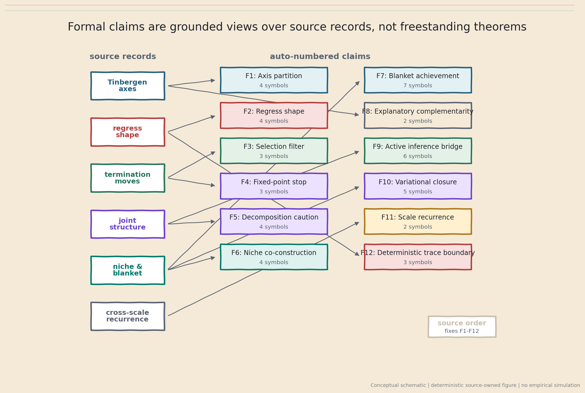
9.4 Symbol Glossary
All named symbols used by the formal claims appear in tbl. 2. Operators such as equality, set product, and implication are ordinary logical notation rather than project-specific symbols.
| Symbol | Name | Role | Used in claims |
|---|---|---|---|
| \(Q_T\) | Tinbergen question space | The crossed explanatory space used by the paper. | F1, F8 |
| \(p\) | proximate scale | The mechanism-side explanatory scale. | F1 |
| \(u\) | ultimate scale | The function or selection-side explanatory scale. | F1 |
| \(O\) | ontogeny cell | The proximate-developmental quadrant. | F1 |
| \(P\) | prior-like constraint | The prior or prior-like organization being explained. | F2, F3, F4, F5, F6, F9 |
| \(H\) | hyperprior operator | A prior-on-prior move in hierarchical Bayes language. | F2 |
| \(D\) | developmental selector | An ontogenetic prior-selection move. | F2 |
| \(\tau\) | termination condition | A stop rule that prevents another regress level. | F2 |
| \(S\) | selection filter | Function-plus-phylogeny filtering of viable forms. | F3 |
| \(P^*\) | persisting prior form | A prior-like form that remains available for explanation. | F3 |
| \(X^*\) | settled system state | A persisting self-individuating organization. | F4, F7, F11 |
| \(\Phi\) | self-mapping process | The process whose fixed point is the settled system state. | F4, F7 |
| \(\Lambda\) | joint organization | The entangled structure before analytic decomposition. | F5 |
| \(\pi\) | policy factor | A policy factor extracted by decomposition. | F5, F9 |
| \(x\) | state factor | A state factor extracted by decomposition. | F5 |
| \(N\) | niche-mediated co-shaping | The operator representing organism-niche reciprocal shaping of priors. | F6 |
| \(E\) | environmental state | The environmental or niche state co-shaped with prior-like organization. | F6 |
| \(t\) | conceptual update index | An index for the ordered niche co-shaping recurrence. | F6 |
| \(M\) | Markov blanket variables | The active and sensory variables used as a model-level conditional-independence boundary. | F7 |
| \(a\) | active blanket state | An active state variable in the selected Markov blanket partition. | F7 |
| \(s\) | sensory blanket state | A sensory state variable in the selected Markov blanket partition. | F7 |
| \(\eta\) | external state | A state outside the selected blanket partition. | F7 |
| \(\mu\) | internal state | A state inside the selected blanket partition. | F7 |
| \(A\) | active inference operator | The operator coupling perception and action under a prior and policy to minimize free energy. | F9 |
| \(\mathcal{F}\) | variational free energy | The upper bound on negative log evidence that the system minimizes. | F9, F10 |
| \(G\) | expected free energy | The policy-level objective used for action or policy selection in the bounded bridge. | F9 |
| \(\mathcal{F}^*\) | reference bound minimum | The variational free-energy value at the selected reference minimum. | F10 |
| \(\mathcal{Q}\) | variational family | The family of approximate posteriors over which the variational objective is optimized. | F10 |
| \(q\) | variational posterior | The approximate posterior distribution the system maintains. | F9, F10 |
| \(p^*\) | target posterior | The posterior distribution approached by the variational approximation at the selected minimum. | F10 |
| \(e_i\) | explanatory mode | One of the four distinct Tinbergen explanatory modes. | F8 |
| \(R\) | scale recursion operator | The operator mapping a settled system at one scale to the substrate at the next. | F11 |
| \(T\) | deterministic trace | The finite authored sequence of conceptual states used for illustration. | F12 |
| \(\sigma_i\) | formal trace state | A named state in the deterministic illustrative trace. | F12 |
| \(\delta\) | deterministic transition | The transition function that orders adjacent trace states without stochastic sampling. | F12 |
fig. 20 visualizes the closure check. A missing symbol row or an unused glossary row is treated as a source-contract error.
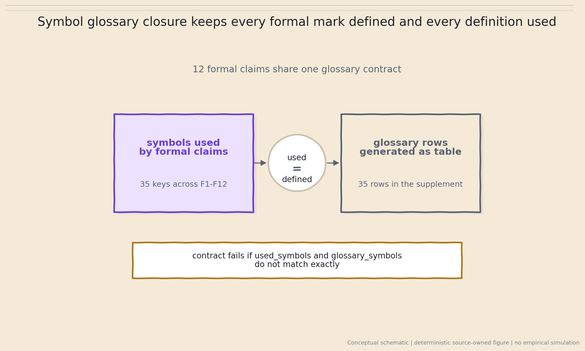
9.5 Text-Integrity Checks
The manuscript treats prose as an artifact surface. Generated tokens do not make the argument true, but they make several kinds of drift observable before the paper is rendered. tbl. 3 lists the checks that guard the project contract.
| Check | Surface | Invariant | Evidence |
|---|---|---|---|
deterministic_simulation_boundary |
manuscript and analysis report | The project limits simulation language to a deterministic illustrative trace and rejects stochastic, empirical, synthetic-data, and performance claims. | SIMULATION_POLICY token, deterministic_simulation_manifest.json, and conceptual_analysis.json scope flags. |
figure_registry_closure |
figures/figure_registry.json | Every figure specification has a generated artifact and a registry label. | figure_specs() and run_analysis_pipeline() compare expected and produced filenames. |
symbol_glossary_closure |
formal supplement | Every symbol key used by a formal claim appears in the generated glossary. | validate_conceptual_contract() checks formal_claims() against symbol_glossary(). |
token_hydration |
output/manuscript | Every double-brace manuscript token is generated before render. | test_all_manuscript_tokens_are_generated and hydration script smoke test. |
integrity_signature |
reproducibility section | A generated token binds the conceptual inventory used by prose, figures, and tests. | CONCEPTUAL_INTEGRITY_TOKEN is derived from source records, not hand-authored prose. |
claim_dependency_closure |
formal supplement | Every claim dependency edge references a claim key that exists. | claim_dependencies() checks source_claim and target_claim against formal_claims(). |
claim_grounding_closure |
formal grounding map | Every formal claim is grounded in at least one named source record used by the grounding map. | validate_claim_grounding() checks claim_grounding() against formal_claims(). |
metadata_keyword_consistency |
metadata files | Keywords in config.yaml are a subset of .zenodo.json, codemeta.json, and CITATION.cff. | test_metadata_keywords_are_consistent_across_all_files checks all metadata files. |
citation_resolution |
manuscript references | Every citation reference in the manuscript has a bib entry in references.bib. | test_all_manuscript_citations_resolve_to_bib scans all manuscript files. |
figure_count_consistency |
manuscript and analysis report | The figure count in the manuscript token matches the actual number of generated figure files. | FIGURE_COUNT token and figures/*.png file count are compared by the analysis pipeline. |
argument_module_closure |
manuscript and source inventory | Every argument module key in the source has a corresponding discussion in the manuscript prose. | ARGUMENT_MODULES token injects the full list; the manuscript references each module by title. |
fig. 21 shows the validation posture: authored source records hydrate the manuscript, figures, reports, and registry, and those surfaces are checked again at render time.
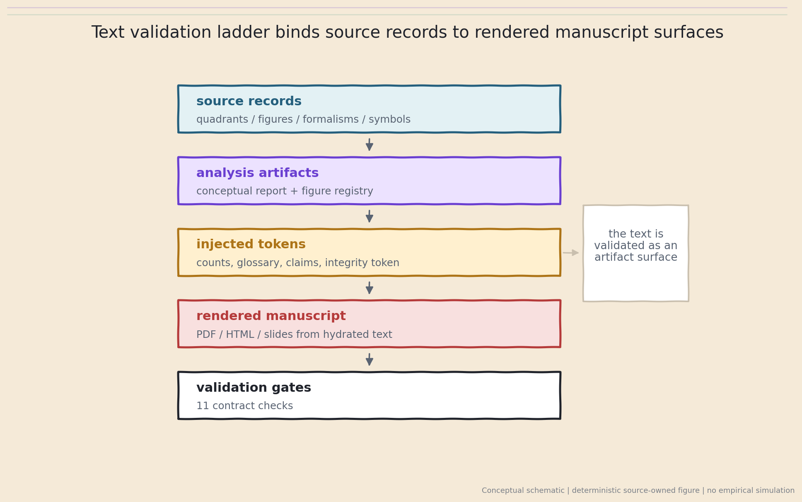
10 References: Source Corpus for the Conceptual and Formal Claims
References are managed in references.bib.